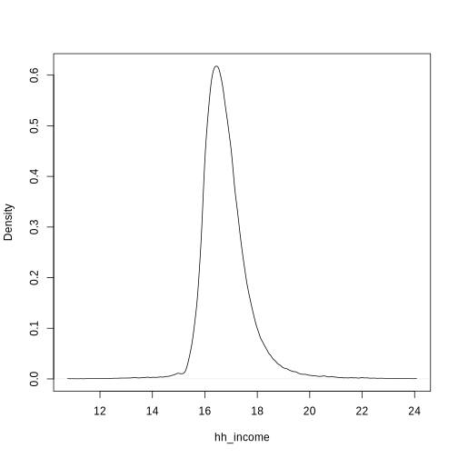
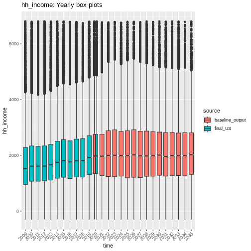
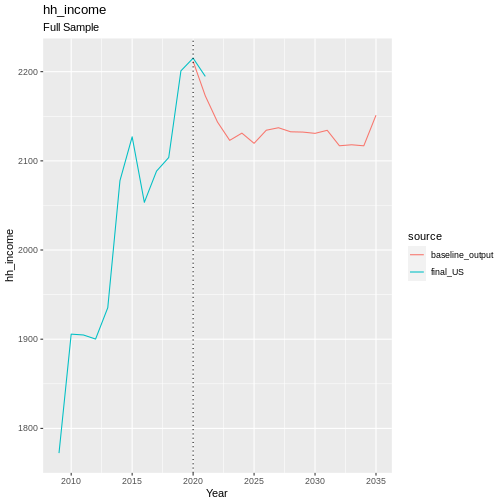
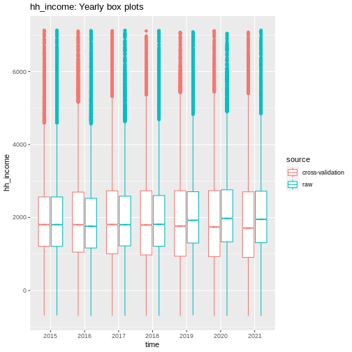
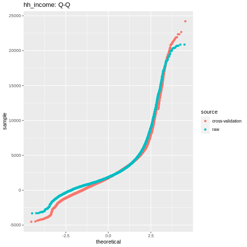
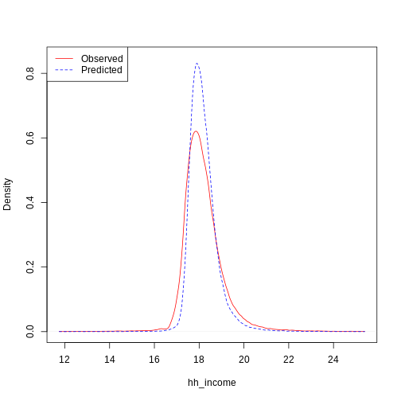
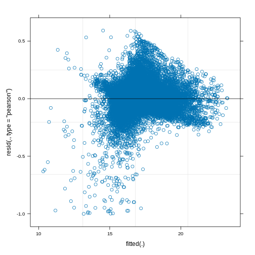

Household Disposable Income
Household disposable income is a well known indicator of mental well-being (Graham 2009). Estimating this is a crucial instrument for the effects of many policy interventions
The output variable is monthly household disposable income. This is calculated as a composite using several variables. Rent, mortgages, and council tax are subtracted from net household income and adjusted by household size. This value is then adjusted for yearly inflation estimates.
More information on these variables can be found at the following links:
monthly_outgoings is the sum of rent, mortgage, and council tax.
See note below about council tax.
This produces a continuous distribution of pounds per month available for a household to spend as it likes. This is plotted below with a median income of \(\sim£1650\).
continuous_density(obs)

Fig. 1 plot of chunk hh_income_data
Transition Model
To estimate this variable we use a Generalised Linear Mixed Model (GLMM) using the lme4 package in R.
Formula:
Each variable included is defined as follows. Each variable with discrete values is defined in the data tables section of this documentation here.
Predictor |
Description |
Li terature/Justification |
|---|---|---|
Previous Income |
(Dilmaghani 2018) |
|
Sex |
(Dilmaghani 2018) |
|
Age |
||
Ethnicity |
(Clemens and Dibben 2014) |
|
Region |
Administrative region of the UK |
(Brewer et al. 2007) |
Education |
Highest attained qualification |
(Eika, Mogstad, and Zafar 2019) |
Job NSSEC |
8 level socio-economic employment category |
(Clemens and Dibben 2014) |
SF-12 MCS |
Mental wellbeing |
(Viswanathan, Anderson, and Thomas 2005) |
Labour State |
Employment status |
(Dilmaghani 2018) |
print(summary(model))
## Generalized linear mixed model fit by maximum likelihood (Adaptive
## Gauss-Hermite Quadrature, nAGQ = 0) [glmerMod]
## Family: Gamma ( log )
## Formula: hh_income_new ~ scale(hh_income) + scale(age) + I(scale(age)^2) +
## I(scale(age)^3) + factor(sex) + relevel(factor(ethnicity),
## ref = "WBI") + factor(region) + relevel(factor(education_state),
## ref = "1") + relevel(factor(job_sec), ref = "3") + scale(SF_12) +
## relevel(factor(S7_labour_state), ref = "FT Employed") + (1 | pidp)
## Data: data
##
## AIC BIC logLik deviance df.resid
## 612911.6 613431.7 -306405.8 612811.6 243509
##
## Scaled residuals:
## Min 1Q Median 3Q Max
## -24.4443 -0.3193 -0.0358 0.2881 13.8807
##
## Random effects:
## Groups Name Variance Std.Dev.
## pidp (Intercept) 0.0004159 0.02039
## Residual 0.0016734 0.04091
## Number of obs: 243559, groups: pidp, 44786
##
## Fixed effects:
## Estimate
## (Intercept) 2.8981772
## scale(hh_income) 0.0160646
## scale(age) 0.0121056
## I(scale(age)^2) 0.0012228
## I(scale(age)^3) -0.0033185
## factor(sex)Male 0.0005352
## relevel(factor(ethnicity), ref = "WBI")BAN -0.0135887
## relevel(factor(ethnicity), ref = "WBI")BLA -0.0170216
## relevel(factor(ethnicity), ref = "WBI")BLC -0.0131225
## relevel(factor(ethnicity), ref = "WBI")CHI -0.0032772
## relevel(factor(ethnicity), ref = "WBI")IND -0.0056032
## relevel(factor(ethnicity), ref = "WBI")MIX -0.0074393
## relevel(factor(ethnicity), ref = "WBI")OAS -0.0124968
## relevel(factor(ethnicity), ref = "WBI")OBL -0.0097827
## relevel(factor(ethnicity), ref = "WBI")OTH -0.0103478
## relevel(factor(ethnicity), ref = "WBI")PAK -0.0124534
## relevel(factor(ethnicity), ref = "WBI")WHO -0.0034962
## factor(region)East of England 0.0018314
## factor(region)London 0.0035498
## factor(region)North East -0.0030860
## factor(region)North West 0.0007761
## factor(region)Northern Ireland 0.0018598
## factor(region)Scotland 0.0018733
## factor(region)South East 0.0040557
## factor(region)South West 0.0005537
## factor(region)Wales -0.0007296
## factor(region)West Midlands 0.0017121
## factor(region)Yorkshire and The Humber -0.0011356
## relevel(factor(education_state), ref = "1")0 -0.0031812
## relevel(factor(education_state), ref = "1")2 0.0030995
## relevel(factor(education_state), ref = "1")3 0.0072814
## relevel(factor(education_state), ref = "1")5 0.0078515
## relevel(factor(education_state), ref = "1")6 0.0146772
## relevel(factor(education_state), ref = "1")7 0.0183380
## relevel(factor(job_sec), ref = "3")0 -0.0039159
## relevel(factor(job_sec), ref = "3")1 0.0054687
## relevel(factor(job_sec), ref = "3")2 0.0047177
## relevel(factor(job_sec), ref = "3")4 -0.0025372
## relevel(factor(job_sec), ref = "3")5 -0.0052784
## relevel(factor(job_sec), ref = "3")6 -0.0033134
## relevel(factor(job_sec), ref = "3")7 -0.0049198
## relevel(factor(job_sec), ref = "3")8 -0.0051909
## scale(SF_12) 0.0013891
## relevel(factor(S7_labour_state), ref = "FT Employed")PT Employed -0.0042800
## relevel(factor(S7_labour_state), ref = "FT Employed")Job Seeking -0.0094344
## relevel(factor(S7_labour_state), ref = "FT Employed")FT Education -0.0069662
## relevel(factor(S7_labour_state), ref = "FT Employed")Family Care -0.0105376
## relevel(factor(S7_labour_state), ref = "FT Employed")Not Working -0.0096057
## Std. Error
## (Intercept) 0.0010667
## scale(hh_income) 0.0001108
## scale(age) 0.0003155
## I(scale(age)^2) 0.0001575
## I(scale(age)^3) 0.0001209
## factor(sex)Male 0.0002855
## relevel(factor(ethnicity), ref = "WBI")BAN 0.0011168
## relevel(factor(ethnicity), ref = "WBI")BLA 0.0009808
## relevel(factor(ethnicity), ref = "WBI")BLC 0.0010295
## relevel(factor(ethnicity), ref = "WBI")CHI 0.0020214
## relevel(factor(ethnicity), ref = "WBI")IND 0.0007311
## relevel(factor(ethnicity), ref = "WBI")MIX 0.0010112
## relevel(factor(ethnicity), ref = "WBI")OAS 0.0011451
## relevel(factor(ethnicity), ref = "WBI")OBL 0.0033702
## relevel(factor(ethnicity), ref = "WBI")OTH 0.0021523
## relevel(factor(ethnicity), ref = "WBI")PAK 0.0008079
## relevel(factor(ethnicity), ref = "WBI")WHO 0.0006807
## factor(region)East of England 0.0006457
## factor(region)London 0.0006433
## factor(region)North East 0.0008346
## factor(region)North West 0.0006306
## factor(region)Northern Ireland 0.0007640
## factor(region)Scotland 0.0006951
## factor(region)South East 0.0006053
## factor(region)South West 0.0006571
## factor(region)Wales 0.0007569
## factor(region)West Midlands 0.0006551
## factor(region)Yorkshire and The Humber 0.0006602
## relevel(factor(education_state), ref = "1")0 0.0009305
## relevel(factor(education_state), ref = "1")2 0.0009359
## relevel(factor(education_state), ref = "1")3 0.0009762
## relevel(factor(education_state), ref = "1")5 0.0009990
## relevel(factor(education_state), ref = "1")6 0.0009579
## relevel(factor(education_state), ref = "1")7 0.0009915
## relevel(factor(job_sec), ref = "3")0 0.0004012
## relevel(factor(job_sec), ref = "3")1 0.0006011
## relevel(factor(job_sec), ref = "3")2 0.0004890
## relevel(factor(job_sec), ref = "3")4 0.0003890
## relevel(factor(job_sec), ref = "3")5 0.0004593
## relevel(factor(job_sec), ref = "3")6 0.0005095
## relevel(factor(job_sec), ref = "3")7 0.0003721
## relevel(factor(job_sec), ref = "3")8 0.0004586
## scale(SF_12) 0.0001067
## relevel(factor(S7_labour_state), ref = "FT Employed")PT Employed 0.0003317
## relevel(factor(S7_labour_state), ref = "FT Employed")Job Seeking 0.0005117
## relevel(factor(S7_labour_state), ref = "FT Employed")FT Education 0.0005823
## relevel(factor(S7_labour_state), ref = "FT Employed")Family Care 0.0005253
## relevel(factor(S7_labour_state), ref = "FT Employed")Not Working 0.0003961
## t value
## (Intercept) 2716.945
## scale(hh_income) 145.010
## scale(age) 38.366
## I(scale(age)^2) 7.765
## I(scale(age)^3) -27.450
## factor(sex)Male 1.875
## relevel(factor(ethnicity), ref = "WBI")BAN -12.168
## relevel(factor(ethnicity), ref = "WBI")BLA -17.354
## relevel(factor(ethnicity), ref = "WBI")BLC -12.746
## relevel(factor(ethnicity), ref = "WBI")CHI -1.621
## relevel(factor(ethnicity), ref = "WBI")IND -7.664
## relevel(factor(ethnicity), ref = "WBI")MIX -7.357
## relevel(factor(ethnicity), ref = "WBI")OAS -10.914
## relevel(factor(ethnicity), ref = "WBI")OBL -2.903
## relevel(factor(ethnicity), ref = "WBI")OTH -4.808
## relevel(factor(ethnicity), ref = "WBI")PAK -15.414
## relevel(factor(ethnicity), ref = "WBI")WHO -5.136
## factor(region)East of England 2.836
## factor(region)London 5.518
## factor(region)North East -3.698
## factor(region)North West 1.231
## factor(region)Northern Ireland 2.434
## factor(region)Scotland 2.695
## factor(region)South East 6.701
## factor(region)South West 0.843
## factor(region)Wales -0.964
## factor(region)West Midlands 2.614
## factor(region)Yorkshire and The Humber -1.720
## relevel(factor(education_state), ref = "1")0 -3.419
## relevel(factor(education_state), ref = "1")2 3.312
## relevel(factor(education_state), ref = "1")3 7.459
## relevel(factor(education_state), ref = "1")5 7.860
## relevel(factor(education_state), ref = "1")6 15.322
## relevel(factor(education_state), ref = "1")7 18.495
## relevel(factor(job_sec), ref = "3")0 -9.762
## relevel(factor(job_sec), ref = "3")1 9.097
## relevel(factor(job_sec), ref = "3")2 9.648
## relevel(factor(job_sec), ref = "3")4 -6.522
## relevel(factor(job_sec), ref = "3")5 -11.493
## relevel(factor(job_sec), ref = "3")6 -6.503
## relevel(factor(job_sec), ref = "3")7 -13.221
## relevel(factor(job_sec), ref = "3")8 -11.319
## scale(SF_12) 13.019
## relevel(factor(S7_labour_state), ref = "FT Employed")PT Employed -12.904
## relevel(factor(S7_labour_state), ref = "FT Employed")Job Seeking -18.438
## relevel(factor(S7_labour_state), ref = "FT Employed")FT Education -11.963
## relevel(factor(S7_labour_state), ref = "FT Employed")Family Care -20.059
## relevel(factor(S7_labour_state), ref = "FT Employed")Not Working -24.249
## Pr(>|z|)
## (Intercept) < 2e-16 ***
## scale(hh_income) < 2e-16 ***
## scale(age) < 2e-16 ***
## I(scale(age)^2) 8.15e-15 ***
## I(scale(age)^3) < 2e-16 ***
## factor(sex)Male 0.060839 .
## relevel(factor(ethnicity), ref = "WBI")BAN < 2e-16 ***
## relevel(factor(ethnicity), ref = "WBI")BLA < 2e-16 ***
## relevel(factor(ethnicity), ref = "WBI")BLC < 2e-16 ***
## relevel(factor(ethnicity), ref = "WBI")CHI 0.104973
## relevel(factor(ethnicity), ref = "WBI")IND 1.81e-14 ***
## relevel(factor(ethnicity), ref = "WBI")MIX 1.88e-13 ***
## relevel(factor(ethnicity), ref = "WBI")OAS < 2e-16 ***
## relevel(factor(ethnicity), ref = "WBI")OBL 0.003700 **
## relevel(factor(ethnicity), ref = "WBI")OTH 1.53e-06 ***
## relevel(factor(ethnicity), ref = "WBI")PAK < 2e-16 ***
## relevel(factor(ethnicity), ref = "WBI")WHO 2.81e-07 ***
## factor(region)East of England 0.004566 **
## factor(region)London 3.43e-08 ***
## factor(region)North East 0.000218 ***
## factor(region)North West 0.218480
## factor(region)Northern Ireland 0.014921 *
## factor(region)Scotland 0.007040 **
## factor(region)South East 2.07e-11 ***
## factor(region)South West 0.399367
## factor(region)Wales 0.335051
## factor(region)West Midlands 0.008958 **
## factor(region)Yorkshire and The Humber 0.085446 .
## relevel(factor(education_state), ref = "1")0 0.000629 ***
## relevel(factor(education_state), ref = "1")2 0.000927 ***
## relevel(factor(education_state), ref = "1")3 8.73e-14 ***
## relevel(factor(education_state), ref = "1")5 3.86e-15 ***
## relevel(factor(education_state), ref = "1")6 < 2e-16 ***
## relevel(factor(education_state), ref = "1")7 < 2e-16 ***
## relevel(factor(job_sec), ref = "3")0 < 2e-16 ***
## relevel(factor(job_sec), ref = "3")1 < 2e-16 ***
## relevel(factor(job_sec), ref = "3")2 < 2e-16 ***
## relevel(factor(job_sec), ref = "3")4 6.96e-11 ***
## relevel(factor(job_sec), ref = "3")5 < 2e-16 ***
## relevel(factor(job_sec), ref = "3")6 7.86e-11 ***
## relevel(factor(job_sec), ref = "3")7 < 2e-16 ***
## relevel(factor(job_sec), ref = "3")8 < 2e-16 ***
## scale(SF_12) < 2e-16 ***
## relevel(factor(S7_labour_state), ref = "FT Employed")PT Employed < 2e-16 ***
## relevel(factor(S7_labour_state), ref = "FT Employed")Job Seeking < 2e-16 ***
## relevel(factor(S7_labour_state), ref = "FT Employed")FT Education < 2e-16 ***
## relevel(factor(S7_labour_state), ref = "FT Employed")Family Care < 2e-16 ***
## relevel(factor(S7_labour_state), ref = "FT Employed")Not Working < 2e-16 ***
## ---
## Signif. codes: 0 '***' 0.001 '**' 0.01 '*' 0.05 '.' 0.1 ' ' 1
##
## Correlation matrix not shown by default, as p = 48 > 12.
## Use print(summary(model), correlation=TRUE) or
## vcov(summary(model)) if you need it
Council Tax
In the UKHLS main release data, council tax information is reported by band. Specific amount deductions are only available in the Special Licence and Secure Access datasets. Instead of reported deductions, we have simulated the amount of council tax each household is paying by taking a random uniform draw for each household within the confines of their band.
Validation
handover_boxplots(raw.dat, base.dat, v)

Fig. 2 plot of chunk hh_income_handovers
handover_lineplots(raw.dat, base.dat, v)

Fig. 3 plot of chunk hh_income_handovers
multi_year_boxplots(raw, cv, 'hh_income')

Fig. 4 plot of chunk hh_income_cv
q_q_comparison(raw, cv, 'hh_income')

Fig. 5 plot of chunk hh_income_cv
Results
Model diagnostics are displayed below. To summarise:
r squared of 0.21 indicates reasonable fit.
Gender not significant. Some ethnicities see increases. Only London has higher income. High quality jobs earn more. PT employed earn less students earn more. Housing quality strong indicator of higher income.
diagnostic plots show under dispersion. Some extreme outlier values need investigating.
overall decent fit.


References
Brewer, Mike, Alastair Muriel, David Phillips, and Luke Sibieta. 2007. “Poverty and Inequality in the UK: 2008.”
Clemens, Tom, and Chris Dibben. 2014. “A Method for Estimating Wage, Using Standardised Occupational Classifications, for Use in Medical Research in the Place of Self-Reported Income.” BMC Medical Research Methodology 14 (1): 1–8.
Dilmaghani, Maryam. 2018. “Sexual Orientation, Labour Earnings, and Household Income in Canada.” Journal of Labor Research 39 (1): 41–55.
Eika, Lasse, Magne Mogstad, and Basit Zafar. 2019. “Educational Assortative Mating and Household Income Inequality.” Journal of Political Economy 127 (6): 2795–835.
Graham, Hilary. 2009. Understanding Health Inequalities. McGraw-hill education (UK).
Viswanathan, Hema, Rodney Anderson, and Joseph Thomas. 2005. “Nature and Correlates of SF-12 Physical and Mental Quality of Life Components Among Low-Income HIV Adults Using an HIV Service Center.” Quality of Life Research 14 (4): 935–44.